Bleak Forest
Character Creation
© Johnathan L. Bingham & Ostensible Cat Design
Quick Start
If you have never played a Bleak Forest Engine game before, read this section first. It tells you what you need to know to get started creating your character and where to go to get more details for things like skills, spells, and playing the game.
What You Need:
- A set of at least six six sided dice (d6) and one twenty-sided die (d20)
- Pencil and paper (or a printed character sheet)
- These rules
Create Your Character in 4 Steps:
The character creation process is as follows:
- Attribute Generation: Roll 3d6 for each stat in order, do not change the scores or alter the order (after all, this is the core conceit of the game). If your starting bonuses total zero or lower, you may roll again.
- Vitality Calculation: Calculate your starting Vitality score by adding up your attribute bonuses and adding them (or subtracting) the result from a base of 12. This gives you your Vitality total.
- Skills and Focus (Option 1): Roll one d6 on each of the three Attribute Skill tables (Corpus, Anima, Spiritus) to determine your starting skill in each area. These three skills are granted free at Apprentice (+1) rank. Next roll for a focus for each skill granted at Competent Rank.
- Skills and Focus (Option 2): Alternative method: You have 9 skill points to distribute, with each rank of a skill or focus costing 1 point. You can only place one point into a skill or a Focus at starting character creation. Maximum starting rank is Expert (+3).
- Determine starting gear
I. Character Attributes
Characters are tracked using three primary attributes that quantify their physical and mental prowess.
| Attribute | Description | Common Check |
|---|---|---|
| Corpus | Corpus represents your physical body. | It affects how well you can lift things, climb, dodge, and how well you endure hardship. |
| Anima | Anima represents your mind. | It reflects your emotions, determination, and how you interact with others. Anima helps with tasks like convincing people, spotting danger, or noticing hidden things. |
| Spiritus | Spiritus represents your inner spirit or essence. | It’s important for things like casting spells, empowering sigils, and making deals with magical beings. |
Character attributes follow a standard range from 3-18 for human characters, with 18 representing the highest human potential. Attribute descriptors such as Mediocre or Excellent can be useful in describing the quantification of the particular attribute, but they are not necessary for gameplay.
Attribute values above 18 apply only to non-player creatures, environments, and Challenges. They represent superhuman, environmental, or mythic forces such as monsters, ancient spirits, cursed locations, or existential ordeals. These values are used only to determine Might.
| Roll (3d6) | Modifier | Description | Might |
|---|---|---|---|
| 1-2 | -4 | Awful | n/a |
| 3-4 | -3 | Terrible | n/a |
| 5-6 | -2 | Poor | n/a |
| 7-8 | -1 | Mediocre | n/a |
| 9-11 | 0 | Average | n/a |
| 12-13 | +1 | Good | n/a |
| 14-15 | +2 | Great | n/a |
| 16-17 | +3 | Excellent | n/a |
| 18 | +4 | Outstanding | n/a |
| 19-20 | +5 | Superb | 1-2 (Imposing) |
| 21-22 | +6 | Fantastic | 3-4 (Imposing) |
| 23 | +7 | Epic | 5 (Dread) |
| 24 | +8 | Legendary | 6 (Dread) |
| 25 | +9 | Mythic | 7 (Dread) |
Might
Might values reflect a level of ability that is beyond human capabilities. These are generally powerful supernatural beings, harsh environments, or otherwise overwhelming challenges that provide a threat level beyond the human scale. Might is not simply a bonus added to dice rolls. It is a tier of dominance that reshapes what is possible when facing the creature or challenge. Might is divided into three tiers, each with effects that apply to minimum BAM! ratings for saves and Vitality damage bonus.
Might Tiers and Effects
Consult the tier below based on the creature’s Might score. All effects for the creature’s tier apply at all times; they are not optional and do not require GM selection each round.
- Tier 0: at this level, there are no might effects, but this is a useful categorization for determining Conjuration effects across entities of varying power levels. (see Conjuration under Paths Arcane).
- Tier I - Imposing (Might 1–3): The creature is significantly beyond human capacity but can still be overcome by skilled or lucky characters.
- All saves against the creature’s attacks or special abilities use Difficult (16) as the minimum BAM! (This is determined by the creature’s BAM! Level so may be higher), even if a lower difficulty would normally apply.
- On a successful hit, the creature deals bonus Vitality damage equal to its Might score (e.g. Might 1 = +1 Vitality damage per hit).
- A natural 20 on a save against this creature is a full success as per the normal rules.
- Tier II - Dread (Might 4–7): The creature is a fundamental threat that warrants extreme caution.
- All saves against its attacks or special abilities use Challenging (19) as the minimum BAM! (May be higher).
- On a successful hit, the creature deals bonus Vitality damage equal to its Might score (e.g. Might 5 = +5 Vitality damage per hit).
- A natural 20 on a save produces a partial success only: the character avoids the worst outcome but suffers a Minor condition regardless.
- The character must declare any defensive or avoidance ability(such as Defensive Manoeuvres, Absorb Blow with a shield, or Evasion) before the attack roll is resolved. If the attack still hits, the ability is used up for that round and provides no benefit.
- Tier III - Mythic (Might 8+): The creature exists at a scale that defies mortal limits.
- All saves against its attacks or special abilities use Formidable (22) as the minimum BAM! (This is determined by the creature’s BAM! Level so may be higher).
- On a successful hit, the creature deals bonus Vitality damage equal to its Might score (e.g. Might 9 = +9 Vitality damage per hit).
- A natural 20 on a save against a Mythic creature still fails, but it is not a fumble. Instead of the full effect, the character takes half damage (rounded up) or suffers a less severe condition.
- When a character declares a defensive or avoidance effect against this creature (such as Defensive Manoeuvres, Absorb Blow with a shield, or Evasion), the effect is used up immediately, whether it works or not.
- If the creature is reduced to 0 Vitality by a single hit, it instead drops to 1 Vitality and takes a Severe condition — it cannot be slain outright without a specific narrative or magical condition being met first.
Assigning Might to Encounters and Challenges:
A creature’s stat block lists its Might. Use that Might to set the minimum BAM! for saves against the creature. For environmental threats or Challenges without stats, use the listed BAM! to choose a Might score. If no BAM! is listed, use these guidelines: Might 1–3 for harsh but survivable conditions (Difficult 16), Might 4–7 for lethal conditions (Challenging 19), and Might 8+ for forces beyond human endurance (Formidable 22). If you are unsure, ask whether an ordinary person could survive without help. If yes, use Might 1–3. If survival would require extraordinary luck or power, use Might 4–7. If survival would be impossible without superhuman help, use Might 8+. For Wyrd Sisters’ Challenges, use Might 0 for Minor, Might 1–3 for Moderate, and Might 4–7 for Major. Major Challenges are beyond normal human endurance: a natural 20 gives only a partial success, and defensive skills must be declared before the roll.